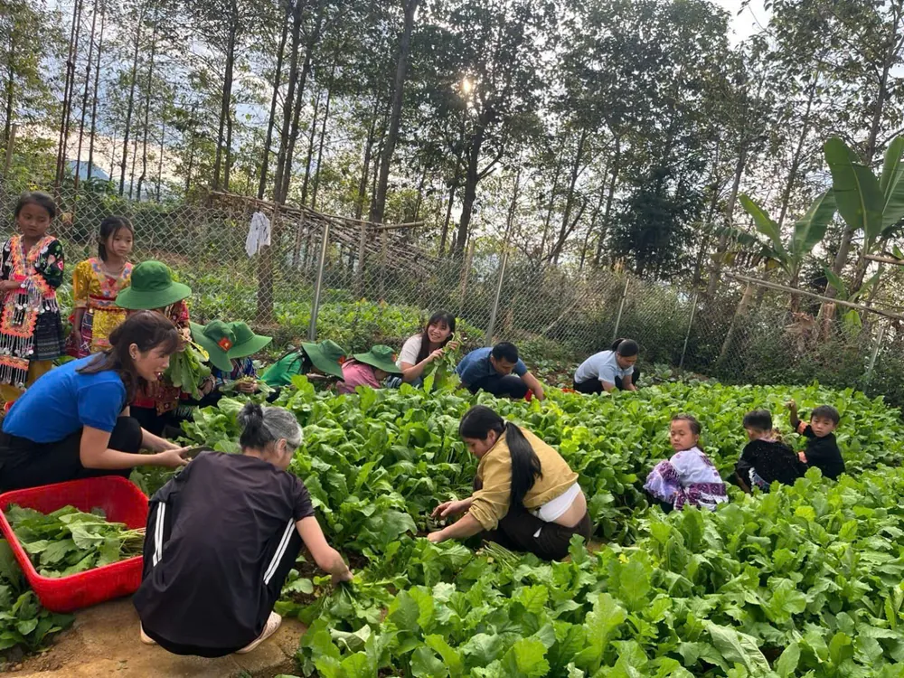

Trang chủ › Bán trú
Bán trú
Chăm lo bữa ăn, giấc ngủ, sức khỏe và sinh hoạt của học sinh bán trú – để mái trường thật sự là ngôi nhà thứ hai của các em.
Thực đơn tuần
Công khai bếp ăn
| Đơn vị cung cấp thực phẩm, hợp đồng | [Đang cập nhật] |
|---|---|
| Giấy chứng nhận cơ sở đủ điều kiện an toàn thực phẩm | [Đang cập nhật] |
| Kiểm thực ba bước, lưu mẫu thức ăn | [Đang cập nhật] Sổ kiểm thực theo Quyết định 1246/QĐ-BYT |
| Định mức tiền ăn, các khoản đóng góp (nếu có) | [Đang cập nhật] |
Vườn rau của trường
Giữa thung lũng núi rừng Sin Suối Hồ, vườn rau xanh do thầy cô, nhân viên và học sinh cùng chăm sóc. Mùa thu hoạch, thầy trò cùng xuống vườn – vừa lao động, vừa học cách trồng và quý trọng thành quả.
Nội quy bán trú
[Đang cập nhật] Nội quy khu bán trú: giờ giấc sinh hoạt, vệ sinh cá nhân, giữ gìn tài sản, đoàn kết giúp đỡ bạn bè.
Chăm sóc sức khỏe
[Đang cập nhật] Tổ chức khám sức khỏe, phòng chống dịch bệnh, theo dõi sức khỏe học sinh bán trú; người phụ trách y tế trường học.
Hoạt động ngoài giờ
Ngoài giờ lên lớp, học sinh bán trú tham gia lao động tại vườn trường, trồng và chăm sóc cây xanh, sinh hoạt văn nghệ – thể thao, làm báo tường và các hoạt động trải nghiệm do Liên đội tổ chức.
Chế độ chính sách
Học sinh bán trú và học sinh ở vùng có điều kiện kinh tế – xã hội đặc biệt khó khăn được hưởng chính sách hỗ trợ tiền ăn, tiền nhà ở, gạo và các chế độ khác theo quy định hiện hành của Nhà nước.
| Học sinh bán trú (năm học ) | |
|---|---|
| Học sinh được hỗ trợ ăn trưa theo Nghị định 339 |
[Đang cập nhật] Danh sách, mức hỗ trợ và kết quả thực hiện chế độ năm học 2026 – 2027 (công khai tại trang Công khai, nhóm Thu, chi tài chính).